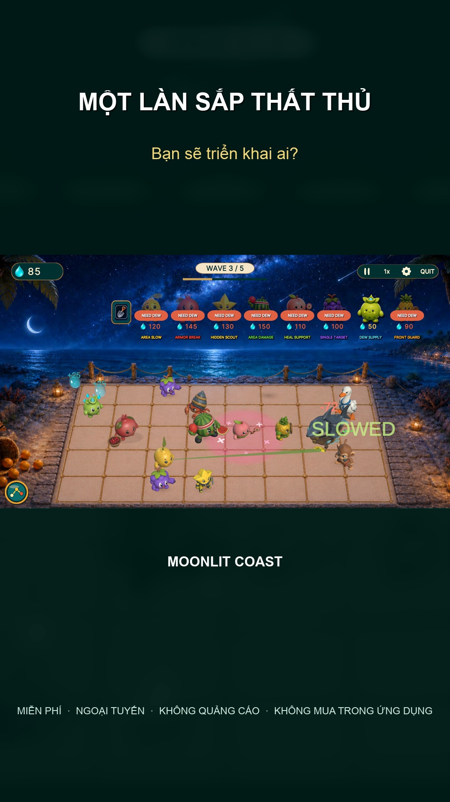
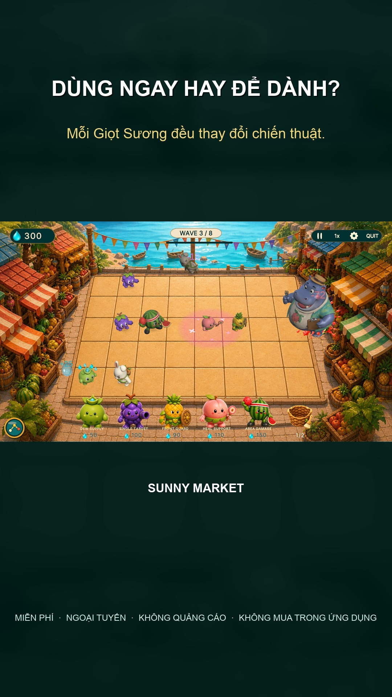
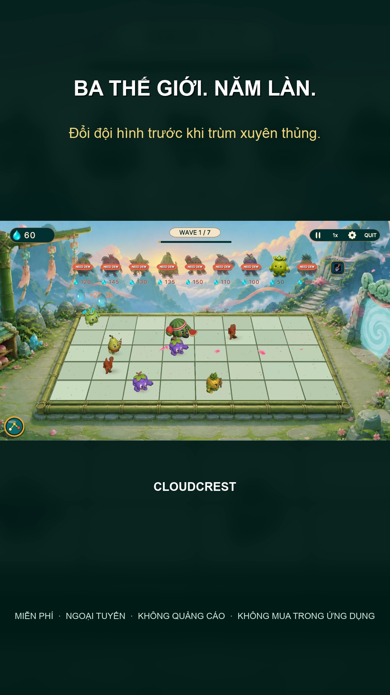

MIỄN PHÍ TRÊN GOOGLE PLAY
Một làn sắp vỡ. Bạn sẽ triển khai ai?
Dùng Giọt Sương ngay để cứu làn đó, hay để dành cho một anh hùng mạnh hơn trước khi trùm xuất hiện? Theo dõi cả 5 làn và quyết định đúng lúc.
Tải trên Google Play- Chơi ngoại tuyến
- Không quảng cáo
- Không mua hàng trong ứng dụng
- Không cần tài khoản



5 LÀN, MỘT ĐỘI TRÁI CÂY
Mỗi lượt triển khai đều quan trọng
- Quan sát 5 làn
- Tìm làn yếu nhất trước khi kẻ địch chạm tới quầy hàng.
- Thu thập Giọt Sương
- Dùng tài nguyên để triển khai hoặc tăng sức mạnh cho anh hùng.
- Xây dựng đội hình
- Kết hợp vai trò tạo tài nguyên, phòng thủ, hồi máu và tấn công.
- Đối đầu trùm lớn
- Thích ứng khi những con vật khổng lồ gây áp lực lên chiến trường.
BA THẾ GIỚI
Mỗi chặng đường tạo ra áp lực mới
- 1Sunny MarketBắt đầu tại khu chợ nắng ấm và học nhịp điệu của 5 làn.
- 2Moonlit CoastBảo vệ quầy hàng bên bờ biển dưới ánh trăng.
- 3CloudcrestĐưa chiến thuật của đội lên vùng núi cao trên mây.
TRƯỚC KHI TẢI
Câu trả lời nhanh
Có thể chơi khi không có mạng không?
Có. Sau khi cài đặt, bạn có thể chơi các trận chiến ngoại tuyến.
Game có quảng cáo hay mua hàng trong ứng dụng không?
Không. Fruit Stand Battle không có quảng cáo và không có mua hàng trong ứng dụng.
Một trận kéo dài bao lâu?
Thời lượng thay đổi theo màn chơi và chiến thuật của bạn.
Giao diện trong ảnh dùng ngôn ngữ nào?
Ảnh chụp là lối chơi thực tế với HUD tiếng Anh đầy đủ. Trang Google Play tại Việt Nam có mô tả tiếng Việt.
ĐỘI CỦA BẠN ĐANG CHỜ
Chọn làn. Triển khai anh hùng.
Miễn phí trên Android. Chơi ngoại tuyến, không quảng cáo.
Tải trên Google Play